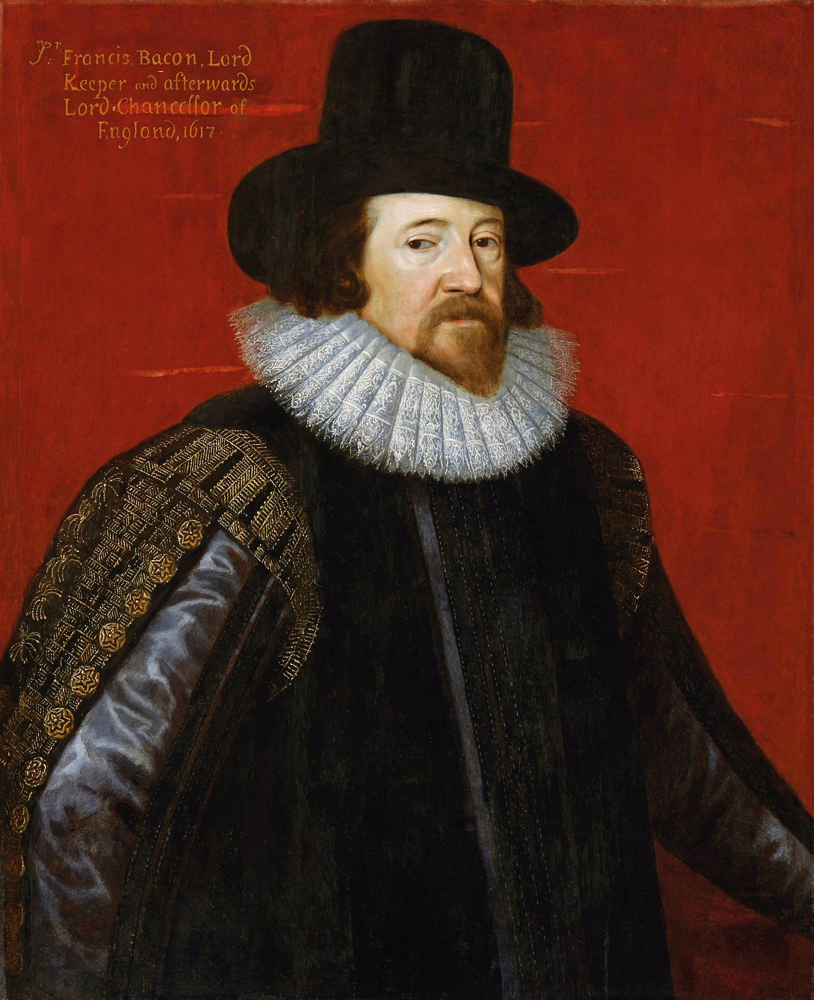
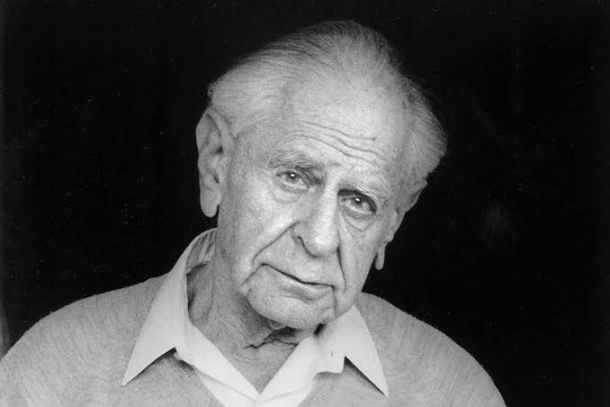
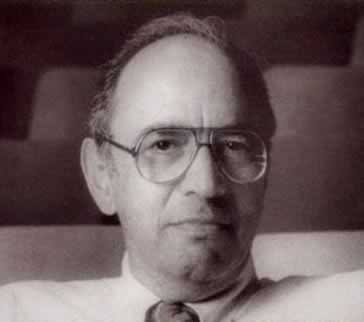
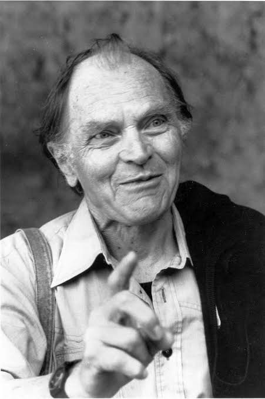

Francis Bacon (1561 – 1626)
Pioneiro do pensamento moderno e do empirismo, Bacon revolucionou a forma de
fazer ciência ao propor o método indutivo. Defendia que o conhecimento científico
deve ser baseado na observação rigorosa e na experimentação prática, e não em
meras especulações teóricas. Sua célebre frase "Saber é poder" reflete a sua visão
de que a ciência deve ser uma ferramenta prática para transformar a natureza e
melhorar a vida humana.
"Saber é poder"

Karl Popper (1902 – 1994)
Um dos maiores filósofos da ciência do século XX, Popper propôs o princípio do
Falsificacionismo. Para ele, uma teoria só é verdadeiramente científica se puder
ser testada e colocada à prova para ser desmentida (falsificada). Defendia que a
ciência não progride acumulando verdades absolutas, mas sim eliminando erros,
avançando através de conjeturas e refutações em uma perpétua busca pela verdade.
"Uma teoria deve poder ser refutada"

Thomas Kuhn (1922 – 1996)
Famoso por introduzir o conceito de "Paradigma", Kuhn mudou a nossa visão sobre
a história da ciência. Ele demonstrou que a ciência não evolui de forma linear e
contínua, mas através de Revoluções Científicas. Quando o modelo vigente
(paradigma) deixa de explicar certas anomalias, ocorre uma crise que resulta na
rutura e na adoção de um paradigma completamente novo.
"A ciência avança através de revoluções"

Paul Feyerabend (1924 – 1994)
Conhecido pelo seu "anarquismo epistemológico", Feyerabend foi o crítico mais
radical das regras científicas rígidas. Na sua obra principal, Contra o Método,
ele defende a liberdade total na investigação científica através da máxima:
"Tudo vale" (Anything goes). Para ele, a ciência progride de forma mais rica
quando não se prende a dogmas ou a um único método definitivo.
"Tudo vale"